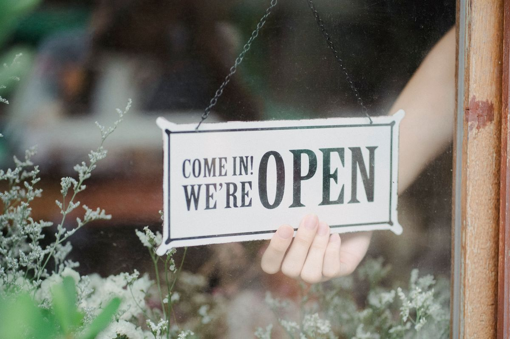

폐업 후 재창업까지 한 묶음 — 희망리턴패키지 진단·사업화 2천만 원·재도전특별자금 연결 순서

가게를 접는 사람은 '망했다'는 감정과 동시에 세 가지 실무 문제에 바로 부딪힙니다. 남은 부채를 어떻게 정리하나, 철거비·정리비용을 누가 대나, 그리고 다시 시작할 돈은 어디서 나오나입니다. 이 세 질문에 관해서 정부 지원은 흩어져 있는 것이 아니라 한 줄로 연결돼 있습니다. 이름은 희망리턴패키지고, 경영개선(폐업 전) → 원스톱 폐업 지원(정리) → 재취업 또는 재창업 사업화 최대 2천만 원(재기) → 재도전특별자금(재기 후 운영자금)으로 이어지는 사다리입니다. 2026년은 중소벤처기업부 통합 공고에서 재기 지원이 7개 분야 가운데 하나로 그대로 유지됐고, 추경으로 경영개선 진단·멘토링이 예산 소진 시까지 추가 접수 중입니다. 이 글은 폐업 전후 시점별로 지금 누를 수 있는 단추를 순서대로 정리합니다.
30초 요약
| 단계 | 누가 | 무엇을 |
|---|---|---|
| 경영개선지원 | 폐업 전 경영위기 소상공인 | 경영진단 후 교육·사업화·폐업 등 후속 지원 (2026년 진단·멘토링은 예산 소진시까지 추가 접수 중) |
| 원스톱폐업지원 | 폐업(예정) 소상공인 | 사업정리 컨설팅, 점포철거, 법률자문, 채무조정 연계 |
| 재취업지원 | 취업으로 전환하는 폐업(예정)자 | 재취업 교육 + 전직장려수당(취업활동 40만 원, 취업성공 60만 원) |
| 재창업지원(재기사업화) | 폐업 후 재창업 예정·1년 미만 재창업자 | 진단·사전교육·재기 실전교육·밀착멘토링·사업화자금 최대 2천만 원(지원금만큼 자부담) |
| 재도전특별자금 | 재창업자·성실상환 채무조정자 | 일반 7천만 원, 희망형(재기사업화 완료) 1억 원, 도약형(재창업 2년+) 2억 원 |
| 신청 창구 | 희망리턴패키지 온라인 접수 (지역은 사업장 소재지 기준, 시스템 오류 1644-5302) | |
1. 누가 대상이 되나 — '폐업 예정'도 대상입니다
가장 많이 오해하는 지점부터 접습니다. 지원은 폐업을 마친 사람만 주는 제도가 아닙니다. 경영개선과 원스톱 폐업 지원, 재취업 지원은 폐업 예정자가 정상적인 대상이고, 재창업 지원은 '폐업(예정) 소상공인'을 기준으로 세 갈래로 나뉩니다.
- 재창업(폐업 후 신규) — 폐업했는데 공고 마감일까지 새 사업자등록을 내지 않은 사람
- 업종전환 — 지금과 다른 업종으로 다시 하려는 사람. 업태 변경이 반드시 필요합니다 (음식점에서 음식점은 불가)
- 창업도약 — 폐업 후 이미 재창업했고 그 시점이 공고일 기준 1년 미만인 사람
여기에 채무조정 트랙이 별도로 있습니다. 새출발기금에서 채무조정 약정을 맺고 그 정보가 등록된 사람이라면, 폐업 후 미사업자등록 상태 + 협약기간 내 재창업 완료 조건으로 사업화자금 최대 1천만 원 트랙을 노릴 수 있습니다 (일반 트랙과 구분되는 별도 공고로 나옵니다).
2. 단계별로 무엇이 나오나
1단계 — 폐업 전: 경영개선지원
매출이 꺾였지만 아직 문은 안 닫은 상태라면 폐업이 아니라 진단부터입니다. 경영진단을 받고 결과에 따라 교육, 사업화, 폐업 중 후속 경로를 연결받습니다. 2026년은 추가경정예산으로 '위기 소상공인 진단·멘토링'이 예산 소진시까지 접수 중입니다.
2단계 — 정리: 원스톱폐업지원
폐업을 결심했다면 남는 게 비용입니다. 원상복구·점포철거비가 대표적이고, 여기에 사업정리 컨설팅(세무·재고 정리), 법률자문, 채무조정 연계가 한 묶음으로 제공됩니다. 철거를 먼저 사비로 하고 나서 신청하면 소급 적용이 안 되는 구조라, 철거 계약 전에 신청하는 것이 정답입니다.
3단계 — 재취업 또는 재창업
다시 장사를 하지 않기로 했다면 재취업 경로입니다. 재취업 교육과 기업수요 연계 특화교육, 그리고 전직장려수당(취업활동 40만 원 + 취업성공 60만 원)이 준비돼 있습니다. 계속 사업을 하기로 했다면 재창업 사업화 — 재창업 진단, 사전교육, 재기 실전교육, 밀착멘토링, 그리고 사업화자금 최대 2천만 원(지원금만큼 자부담 매칭)입니다. 새출발기금 연계 트랙은 사업화자금이 최대 1천만 원입니다.
4단계 — 돈: 재도전특별자금
교육과 사업화를 거쳐 실제로 돈이 필요한 시점이 재도전특별자금입니다. 재창업교육을 수료한 경우, 채무조정 후 성실히 상환 중인 경우 등이 요건이고, 유형별로 한도가 갈립니다. 일반 7천만 원, 희망형(재기사업화 완료) 1억 원, 도약형(재창업 2년 이상) 2억 원, 모두 5년(거치 2년)입니다. 희망리턴패키지 사업화를 끝까지 마치는 것이 7천만 원과 1억 원의 갈림길이라는 뜻입니다.
3. 안 되는 경우
- 사업자등록 요건이 맞지 않는 경우 — 재창업 트랙은 '폐업 후 신규 사업자등록 전' 상태가 요건인 트랙이 있어서, 이미 새 사업자등록을 서둘러 버리면 그 트랙에서 밀려납니다. 신청 전 상태 관리가 곧 자격 관리입니다
- 업종전환인데 업태를 바꾸지 않는 경우
- 정부 지원사업 참여 제한·제재 중인 경우
- 재도전특별자금: 재창업교육 수료 등 자금별 사전 요건을 채우지 않은 경우 (교육 수료가 대출 한도의 전제조건인 트랙이 있습니다)
4. 서류 — 사업별 공고문이 기준이지만 공통분은 이렇습니다
- 신청서·개인정보 동의서 (사업별 서식)
- 사업자등록증명 또는 폐업사실증명원 (폐업 상태 증빙)
- 사업계획서·진단표 (재창업 사업화 트랙)
- 새출발기금 약정 관련 확인 서류 (채무조정 연계 트랙)
- 재창업교육 수료증 (재도전특별자금 요건 트랙)
5. 순서대로 하면 이렇습니다
- 상태 확정 — 폐업 전인지, 폐업 후 신규 사업자등록 전인지, 재창업 1년 미만인지. 상태에 따라 갈 수 있는 트랙이 달라집니다
- 희망리턴패키지 온라인 접수 — 사업장 소재지 기준으로 지역 선택. 지역별 주관기관이 달라서 사업 문의처는 공고문 말미의 지역 표에서 확인합니다
- 재창업 진단·사전교육 이수
- 사업화 평가 통과 후 사업화자금 집행 (자부담 매칭)
- 교육·사업화 이력으로 재도전특별자금 — 소진공 자금확인서(대리) 또는 직접대출 신청으로 이어집니다. 자금 확인서·심사 절차는 정책자금 일반편과 같습니다
6. 거절됐을 때 남는 것
- 사업화 평가 탈락 — 같은 해 회차가 여러 번 열립니다 (재기사업화도 연초·연중 공고가 분리돼 있고, 경영개선 진단·멘토링은 예산 소진시까지 상시 성격으로 열려 있습니다). 탈락 사유를 확인하고 사업계획서를 손봐 다음 회차에 재입장하는 것이 정석입니다
- 재도전특별자금 거절 — 채무조정이 필요한 단계라면 새출발기금·채무조정(소액체납자 회생 등) 트랙을 먼저 고정한 뒤 재도전 성실상환 트랙으로 다시 들어오는 경로가 있습니다
- 사업자등록을 이미 낸 상태라면 — '창업도약'(재창업 1년 미만) 트랙과 청년·일반 정책자금 쪽으로 방향을 틀어야 합니다
바로 가기
같이 읽기
- 재기 후 운영자금 — 2026년 정책자금 한눈에 보기
- 고금리 부채 정리 — 대환대출 12 Rules
- 고정비부터 줄이기 — 재창업 후 공공판매 창구: 벤처나라
- 지금 자격 확인 — 정책자금·조달 자가진단